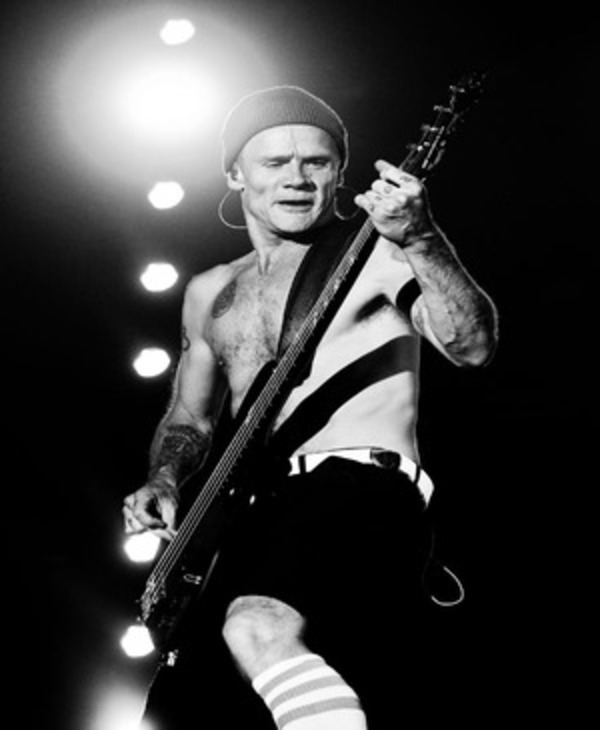

Flea
Baixista da bandaMichael Peter Balzary, mais conhecido como Flea, é um icônico baixista e membro fundador da banda de rock alternativo Red Hot Chili Peppers. Nascido em 16 de outubro de 1962, em Melbourne, Austrália, Flea é reconhecido não apenas por sua habilidade excepcional no baixo, mas também por sua energia frenética no palco.
Flea co-fundou os Red Hot Chili Peppers em 1983, desempenhando um papel crucial na criação do distintivo som funk-rock da banda. Seu estilo inovador, combinando técnicas slapping e popping, tornou-se uma marca registrada, influenciando gerações de músicos.
Em 2011 Flea foi considerado pelo famoso portal de notícias Rolling Stones o segundo melhor baixista de todos os tempos. Ele ficou na frente de nomes como Paul McCartney, Les Claypool e Cliff Burton.
"Flea é um dos baixistas mais criativos e inventivos da história do rock. Seu estilo é único e inimitável, e ele é capaz de criar linhas de baixo que são ao mesmo tempo complexas e dançantes. Ele é um músico de primeira classe e um dos pilares do Red Hot Chili Peppers."
- Nascimento: 16/10/1962
- Idade: 61 anos
- Altura: 1.68m
- Nacionalidade: Austrália
- Cidade: Melbourne, Victoria
- Discos com a banda: 13 albúns
Além de seu talento musical, Flea é conhecido por seu engajamento em causas sociais e humanitárias. Fora dos palcos, ele é um defensor ativo da educação musical nas escolas e apoia diversas organizações de caridade.
Embora Flea seja conhecido principalmente como músico, ele também teve incursões na atuação, destacando-se em papéis cinematográficos, incluindo colaborações notáveis em filmes como "De Volta para o Futuro II" e "O Grande Lebowski".